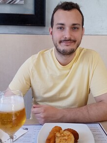

 I am a researcher in applied maths from Chile. I work on numerical analysis and numerical methods for PDEs, and my main applications of interest regard biomedicine, mainly computational cardiology.
My higher education started at Pontificia Universidad Católica de Chile, where I got my Bachelor, professional degree and M.Sc. in Engineering Sciences. During the master, I had the fortune of working with Daniel Hurtado and Gabriel Gatica on image registration. I got my Ph.D. in Italy, at Politecnico di Milano, where I was part of a big research within the iHeart project. I worked mainly with Paolo Zunino, and also with Luca Dede' and Alfio Quarteroni on cardiac poromechanics.
During my first year of post-doc at the University of Milan, I worked with Simone Scacchi on the development of scalable domain decomposition preconditioners, with cardiac mechanics being our target physics. I continued this work, and extended it to electrophysiology and nonlinear solvers in general at the University of Pavia with Luca Pavarino. I did a small period of post-doc at CMM in Chile, where I worked with Axel Osses in the development of a liquid crystal model for cardiac fibers, and then went back to PUC for the devlopment of oxygen delivery models in soft tissues with Daniel Hurtado. I am currently working in the "CMM-CNRS Chair of Excellence" position at CMM.
If any of this captures even a tiny bit of your attention, most of my work is freely available online, so check the Research and Coding pages on this site, and also feel free to contact me! I will be very happy to see my work arise the curiosity of other people.
I am an advocate of open source, which refers to all software that makes its source code available. There are many arguments for using it, which I will not get into here. Still, here are some alternatives to standard software:
I would like to fully acknowledge my collaborators for helping with my work. I will never say it enough, but your help has been precious for both my career and my mental health. Thank you: Gabriel Gatica, Daniel Hurtado, Paolo Zunino, Luca Dede', Alfio Quarteroni, William Miranda, Ricardo Ruiz-Baier, Jakub Both, Florin Radu, Simone Di Gregorio, Christian Vergara, Simone Scacchi, Luca Pavarino, Mai Huynh, Bryan Gómez-Vargas, Wesley de Jesus Lourenço, Ruy Freitas Reis, Bernardo Martins Rocha, Marcelo Lobosco, Rodrigo Weber dos Santos, Luis Miguel de Oliveira Vilaca, Michel Milinkovitch, Franco Dassi, Axel Osses, Aparna Bansal, Dwijendra Pandey, Davide Riccobelli, Francesco Regazzoni, Argyrios Petras, Luca Gerardo-Giorda, Pablo Zurita.